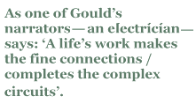

Alan Gould’s The Past Completes Me affords us an opportunity to explore some of his recurring themes and images and, by doing so, to highlight the reasons why he is such an exciting and absorbing poet. Gould is a major Australian poet, not simply because his poems compel us to return to them often, but because he handles major themes — time, space, history, work, awe, courage — with such assurance and apparent ease.
In encouraging readers to buy this book (and Gould’s other available collections), I want, then, in what follows, to point to some of the joys they can expect to experience when reading Gould’s poems together, and also to show some of the interesting connections between poems, which provides a useful way (for those unfamiliar with Gould’s poetry) of approaching his work for the first time. As one of Gould’s narrators — an electrician — says: ‘A life’s work makes the fine connections / completes the complex circuits’.
Let us begin with that verb ‘to complete’. It appears throughout this book in various contexts: in the title poem itself, in ‘Fury’, ‘Just Once’ and, as we have seen, in ‘The Electrician’. The narrator of ‘Just Once’ recalls a visit to England. This little gem deserves to be quoted in full:
For twenty years an instant will persist.
I’m back in London, high in London mist,
and from the bus glimpse someone draw aside
an upstairs curtain. She is, I see, a bride
who smiles upon the wet, inchoate street,
gives it the ah! it lacks to be complete.
The Hopkinsian ‘ah!’ of wonder and contentment seems to come from both the bride (satisfied with the point her life has reached) and the observer, whose own sense of ‘lack’ the bride’s ‘ah!’ speaks to, giving meaning to the otherwise ‘inchoate’ world around him. There is mystery here, as well. Why is the narrator in London? Why does this instant persist for twenty years? Why does he feel that there is something incomplete in his surroundings?
The play with perspective is also interesting. The narrator looks across from a moving bus, fastening on an image of relative stillness and serenity, while the bride looks down from that place of stillness to a scene of flux and irresolution. Each aspect complements the other, and each has need of the other. Resolution opens itself to movement, to change and to the ‘inchoate’, such that the space of observation is the space in which the contemplative ‘ah!’ of creativity shapes meaning out of chaos without denying change.
‘Fury’ holds another key to this dynamic, though it is much darker:
Here is one of the stupors, this white heat
of mind pursuing pure resolution,
for fury has no interest in the incomplete.
Frustration can manage an evolution,
smoulder, mount, erupt, abate.
Fury hungers for the final solution.
The poem contrasts the various ways in which human beings seek to order their existence. Fury is that emotion, which, fuelled by despair at the incomprehensibility of life’s mysteries, seeks to achieve order by effacing difference and messiness. It is quite different from the artist’s search for order, which, by implication, does have an ‘interest in the incomplete’, and which prefers gaps in meaning to any ‘final solution’ — with its obvious and poignant allusion to the Nazi genocide. The artist’s and the ideologue’s pursuits are not so much opposites, however, as they are two species of a common genus, for the artist also seeks resolution (although it is not ‘pure’) and a ‘solution’ (although not a ‘final’ one). The poet’s use of terza rima aptly embodies the play of similarity and difference, of resolution and dissolution, holding both in analogical harmony.
This brings us to one of Gould’s recurring motifs — the sense of the provisional nature of all apparently ‘complete’ objects and moments. Throughout this selection one finds narrators and characters seeking to still the flux of time — whether in the memory or some work of art — but in such a way that the beauty of flux is retained. One of Gould’s early exemplars was Joseph Conrad. In an early poem of homage to the novelist, he describes him as one who had an eye ‘to still the glitter on the sea’. In another poem, ‘Sea Ballad’, the narrator recalls watching the sea from the deck of a ship, contemplating the waves which ‘rose as though they meant to say…/ then let their meanings slip’. He sees the world ‘made and then unmade’, and he is one who would prefer ‘to fall through unbelief forever’ rather than to settle upon a fixed meaning of life such as the one offered him by the Christian preacher.
Gould hopes at once to still life and to celebrate its changes. He wants to be unsettled in his thoughts, since such is the sign of life, and yet he reveres all who are assured in their sense of self: circus performers, needle workers, a soccer player and, in one of the most moving poems of the collection (‘Intently’), a man with ‘this knack of living like light at the shifting point / of others’ need’.
Gould is also a great celebrator of the trades, as a glance down the contents pages of this book reveals. There one will find such titles as ‘Demolisher’, ‘Electrician’, ‘Roof Tilers’, ‘South Coast Mechanic’, ‘Treeloppers’ and ‘Lace Maker’. ‘Tableau’, from A Fold in the Light, is another superb poem of this sort (about two house painters), although unfortunately it has not been included in this selection. Gould is at his strongest in this mode, where he also writes out of a sense of incompleteness — in this case, he (or his speaker, at least) seeks the sense of morale or well being embodied by the characters he represents. As Gould has suggested to me, the thing that worries the speaker of these poems ‘is self-possession, which is the psychological aspect of completeness…[I]t looks at the coordination of nerve, physical competence and good cheer, the province of morale …’
In ‘Treeloppers’, the narrator feels that he has somehow ‘spent the day on trial’, yet such self-doubt is thrown into ironic belief by the poet’s beautiful and successful efforts to match his poetic skill with those skills he depicts. On the one hand, the mood in these ‘tradesman’ poems tends to be one of admiration at the sense of self achieved by these men; on the other, there is also the fellow-feeling that one tradesman (the poet) naturally has for another. He feels a clear affinity, for instance, with the man who demolishes houses so as to recover the never reachable horizon of the present-past, for this is the poet’s own task:
His work is wholly restoration —
He is recovering horizons…
By lunchtime the house
Is a birdcage of timbers; by evening it’s gone,
And the man sits, gleaming like resin,
Rolling a cigarette, drinking water,
Looking through a gap at new hills,
Peering down the shaft he’s made in sixty years.
(from ‘Demolisher’)
Gould’s admiration for tradesmen and his belief in the dignity of craftsmanship are hinted at in the biographical note that opens the book. There we learn that his interests include ship-modelling and maritime art. Those who have read Mermaid and A Fold in the Light will have encountered his beautiful maritime drawings, which he bases on the models he himself builds. The delicate hand required for these other arts, along with the fine materials and the meticulous attention to detail they demand, suggests parallels with Gould’s poetics.
Ships sail throughout these pages, propelled by the poet’s tender voice. Many of his history pieces are not only set on and around ships, they are also celebrations of the ships themselves, of the bric-a-brac of the age of sail — compasses, rigging, rope, cable, the caked paint on a bulwark — and of the fragility and vulnerability of all human endeavour which the ships represent. And no other contemporary poet has so successfully conveyed the mysterious interconnectedness of all times and places, embodied by those metaphorical ships (ourselves) passing in the night:
Hamburg: the clockhands move upon their star.
A liner glides along the Elbe, its lights
move through the city’s lights, a galaxy
passing in silence through a galaxy.
My girl’s behind me on the bed. She smokes
and minutes tick. Her time is waiting for
a time to end, a time to start. As mine is.
(from ‘Galaxies’)
Gould searches for connections and interconnections: for the slants of light that illuminate a precious, fragile instant, for the intricacies of frost, ice and mirrored reflections (‘the single element locking its plural meanings’ — ‘Ice on Windows’), for all the subtle changes of mood in landscapes, nature-scapes and human-scapes alike, that compete in the memory for ultimate significance. Which of our memories are real? Which isolate the ‘truth’ of a person, place or epoch? Such are the questions Gould asks repeatedly, most memorably in a series of explorations of friends and acquaintances from boarding school, the most perfectly realised of which is ‘Yogi-boy’, an elegy for a man who had been both the school clown (he could ‘sit cross-legged on a chair / then knot his feet behind his head’) and also the narrator’s persecutor:
I must deal two faces in the mind,
your sidelong sneer, and that innocent other
impossibly smiling from between your thighs,
and accept that nothing in this life
can ever be just between us.
It is many years since Alan Gould’s last selected poems. The latest selection, drawn from the thirty years of published work up to the splendid poems recently collected in Folk Tunes (Salt, 2009), amply demonstrates that the past is worth waiting for:
Taking its time, its small projections, the minute hand
has once more scanned in all directions.
(from ‘Hour’).